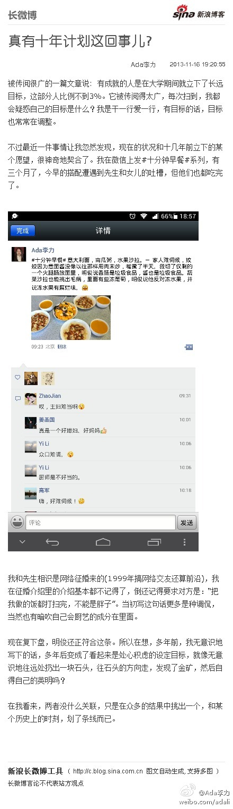
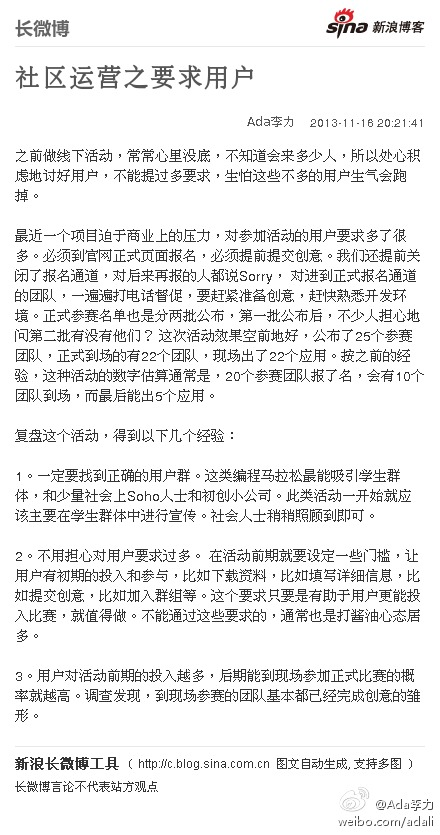

#读书#营销没有教科书，要靠自己摸索体会。如果看教科书，学到的是零，听有实战经验的人讲，能学个5%—10%。真正剩下的还是靠自己干，自己在干的过程中摸索，在干的过程中体会。— 书籍只能说些道儿，坐而论道是最轻松的事儿，领道后能挽起袖子干活儿的是少数。
#读书#很多人的经验教训，是一段时期内，集中精力只做一件事情。—— 这一段时间我是要集中精力做客服，一是客服是最直接接触到用户的岗位，能找客服反馈问题的都是忠实用户; 二是用户才能告诉你产品的问题，这个点切入，才容易推进社区产品的改进。
#读书#这句话很赞: “有的人对自己花钱抠，对别人是不抠的”。— 之前假设消费者都是为自己花钱的，只有少数例外场景，比如孩子孝敬老人，父母给孩子买东西。现在看来，在东方社会里，这种思维体现的地方要多得多，跟面子等级有关。
#姣姣#学校定期举办跳蚤市场，每次她都发愁卖什么。这次我帮她找了些万圣节剩下的南瓜灯，和小贴纸，都标价一元。姣姣也带了些标价五元八元的书籍，按三折的价格卖。一元的东西基本都卖掉了，书剩下来了。—— 和淘宝上的规律类似，标价是看用户接受度，而不是看成本。
真有十年计划这回事儿?：被传阅很广的一篇文章说: 有成就的人是在大学期间就立下了长远目标，这部分人比例不到3%。它被传阅得太广，每次扫到，我都会疑惑自己的目标是什么？我是干一行爱一行，...文字版>> 网页链接 （新浪长微博>> 网页链接） 
社区运营之要求用户： 之前做线下活动，常常心里没底，不知道会来多少人，所以处心积虑地讨好用户，不能提过多要求，生怕这些不多的用户生气会跑掉。 最近一个项目迫于商业上的压力，对参加活动...文字版>> 网页链接 （新浪长微博>> 网页链接） 